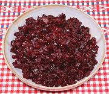

|
Pickled Beets - QuickDenmark | ||||
| Makes: Effort: Sched: DoAhead: |
1-1/4 cup ** 30 min Best |
This method is for use in recipes, such as Danish beef patties, if you don't have the real Pickled Beets on hand. Dice fine for beef patties, for other uses you may want matchsticks or another shape. | |||
|
10 10 ------- 1/4 1/4 2 1 ------- |
oz oz --- c c t T --- |
Beets Onion -- Pickle Butter, salted Vinegar, Cider Sea Salt Sugar (1) ---------- |
Make - (30 min)
|